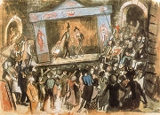

Vlasta Burian
Jiøina Štìpnièková a Jaroslav Vojta ve filmové adaptaci Maryši

František Drtikol: Jaroslav Kvapil
|
DIVADLO A FILM
Ji pøed vznikem samostatného Èeskoslovenska se tìšily nejvìtší prestii dvì praské scény – Národní divadlo a Mìstské divadlo na Královskıch Vinohradech. Roku 1921 se zde vymìnili reiséøi. K.H.Hilar nastoupil do Národního divadla a Jaroslav Kvapil na Vinohrady. Hilar vedl herce k expresivnímu vırazu, pro nìj byla typická pøepjatá emotivnost, dùraz na prudká gesta, vyjadøování vnitøního neklidu nebo obliba konfliktních situací. V Národním divadle vynikli herci Václav Vydra, Eduard Kohout, Jaroslav Vojta, Saša Rašilov, Rudolf Deyl, Rùena Nasková, Antonie Nedošínská nebo Jan Pivec. Kvapil uplatòoval klasiètìjší a lyriètìjší inscenaèní postupy. Spolupracoval s dramatikem Karlem Èapkem a scénografy Josefem Èapkem, Františkem Muzikou èi Bedøichem Feuersteinem. Ve Vinohradském divadle pùsobili herci František Smolík, František Kováøík, Zdenìk Štìpánek, Rùena Šlemrová, Olga Scheinpflugová, Hugo Haas, Jiøina Štìpnièková nebo Leopolda Dostalová. Øada divadelníkù se zároveò uplatnila ve filmu.
Vedle tìchto kamennıch divadel existovaly i menší scény, napøíklad literární a politické kabarety, loutková divadla, divadla pro dìti, koèovné spoleènosti nebo ochotnická divadla.
Svébytnou podívanou pøedstavovaly slavnostní pøehlídky nebo sokolské slety.
X. všesokolskı slet v Praze roku 1938
|
Hudba
Vıznamnımi skladateli váné hudby byli Leoš Janáèek, Bohuslav Martinù, Josef Bohuslav Foerster, Vítìzslav Novák nebo Josef Suk.
Leoš Janáèek
Hrají ve vašem mìstì ochotníci? Navštìvuješ jejich pøedstavení? Proè?
Jakı je rozdíl mezi šantánem, kabaretem a varieté?
Co je literární kabaret?
Zopakuj si, co víš o avantgardních scénách (Osvobozené divadlo, Burianovo „Déèko"...).
Kteøí avantgardní autoøi psali divadelní hry?
|
Karel Èapek (1890-1938)
Èapkovy hry uvádìlo Mìstské divadlo na Královskıch Vinohradech. Karel Èapek je autorem dramat Loupeník, R.U.R., Vìc Makropulos, Bílá nemoc a Matka. S bratrem Josefem Èapkem napsal hry Ze ivota hmyzu, Lásky hra osudná a Adam Stvoøitel. Manelka Karla Èapka Olga Scheinpflugová byla nejen hereèkou, ale rovnì spisovatelkou. Úspìšná byla její hra Madla z cihelny.
Haas a Scheinpflugová
|
Karel Èapek: Bílá nemoc
V Èapkovì dramatu Bílá nemoc svìt zachvátí epidemie záhadné choroby, která se zprvu projevuje znecitlivìním èásti tìla a konèí smrtí nakaeného. Lék na tzv. bílou nemoc objevuje doktor Galén, kterı léèí vıhradnì chudé a svou metodu nechce nikomu prozradit, dokud nepøestanou všechny války. V zemi však vládne fašistickı diktátor Maršál, kterı se chystá napadnout sousední stát. Maršál také onemocní bílou nemocí a nakonec na podmínky doktora Galéna pøistupuje. Lékaø se k nìmu ale nedostane, protoe ho pøed diktátorovım palácem ušlape zfanatizovanı dav. S Galénovou smrtí mizí lék proti bílé nemoci. Vyléèen nebude ani Maršál, ani další nakaení lidé.
Hugo Haas natoèil podle Èapkovy pøedlohy stejnojmennı film, ve kterém ztìlesnil doktora Galéna. Závìr hry se Haas rozhodl zmìnit, aby vyznìní nebylo tak beznadìjné.
|
Èapek s Haasem bìhem natáèení Bílé nemoci
Srovnej postavy doktora Galéna a dvorního rady.
Co si myslíš o Galénovi?
Porušil Galén Hippokratovu pøísahu?
Jednal Galén neeticky, kdy upíral nìkterım nemocnım svùj lék?
Byl Galén ve svém boji úspìšnı?
Jaké byly osudy herce Hugo Haase?
|
Karel Hašler (1879-1941)
Hašler se narodil na praském Zlíchovì a zemøel v koncentraèním táboøe Mauthausen. Zaèínal jako ochotník. Vystupoval v èinohøe, operetách i operách. Prošel øadou divadel (Národní divadlo, Vinohrady), kabaretù (Lucerna, Rokoko) a varieté. Jeho manelka Zdenka byla sestrou skladatele Rudolfa Frimla. Hašler psal krátké skeèe, kabaretní vıstupy i celoveèerní pøedstavení, revue a operety. Velmi populární byly jeho sentimentální idylické písnì s milostnou a vlasteneckou tematikou. Skládal i kuplety a satirické popìvky. Spolupracoval na filmech Písnièkáø, Srdce za písnièku, Záhada modrého pokoje, Král ulice, Jánošík, Hordubalové, Babièka, Pantáta Bezoušek, Roztomilı èlovìk nebo Mìsteèko na dlani. V nìkolika filmech si také zahrál.
|
Kabarety
Zlatá doba kabaretu pøišla tìsnì po skonèení 1. svìtové války. V Praze si získal popularitu kabaret Lucerna, ve kterém pùsobil Karel Hašler jako autor i interpret vlastních komickıch vıstupù a písní. Èervená sedma (1918-1922) byla spíše literárním kabaretem. Øídil ji písnièkáø Jiøí Èervenı, kterı spolupracoval s Eduardem Bassem. Touto scénou prošli komikové Vlasta Burian, Ferenc Futurista nebo Jindøich Plachta. Vystoupil zde té Jaroslav Hašek. V Rokoku pùsobil Vlasta Burian, Ferenc Futurista nebo Jára Kohout. Uvádìla se zde Kischova hra Nanebevstoupení Tonky Šibenice, Longenovy hry nebo Hašlerovy revue.
Øada komikù si pozdìji zaloila vlastní divadla, napøíklad Vlasta Burian, Jára Kohout nebo Oldøich Novı. Publikum navštìvovalo pøedstavení hlavnì kvùli jejich hereckım vıkonùm, ostatní herci byli spíše druhoøadí pøihrávaèi. Nejúspìšnìjší komedie èasto získaly také filmovou podobu.
|
Karel Hašler ve filmu Písnièkáø
Najdi v Hašlerovıch písnièkách vlastenecké a milostné motivy
Které další Hašlerovy písnì znáš? Umíš je zazpívat?
Líbí se ti Hašlerovy písnì? Proè?
Co má spoleèného Karel Hašler s bonbony Hašlerkami?
|
Josef Skupa (1892-1957)
Skupa pocházel ze Strakonic a zemøel v Praze. Pùsobil jako loutkoherec v plzeòském Loutkovém divadle Feriálních osad. Roku 1920 vytvoøil øezbáø Karel Nosek podle Skupova návrhu figurku Spejbla, o 6 let pozdìji k ní pøibyl Hurvínek. Roku 1930 zaloil profesionální Plzeòské loutkové divadlo prof. Josefa Skupy, se kterım objídìl Èechy. Pùvodní komickou dvojici ještì doplnily loutky holèièky Mánièky a psa eryka.
|
Skupùv Spejbl a Hurvínek
Skupovy vıstupy s loutkami Spejbla a Hurvínka nebyly pùvodnì urèeny dìtskım divákùm, ale postupnì zaèal psát pøedstavení pro dospìlé i dìti. Pro jednotlivé scénky jsou typické slovní høíèky a jazyková komika. Šlo vlastnì o konverzaèní hry zaloené na rozdílu dvou rùznıch generací. Brzy se ustálily povahové rysy obou postav – Spejbl jako pohodlnı, nerudnı, nevzdìlanı, konzervativní, autoritáøskı a diletantskı tatík, Hurvínek jako jeho raubíøskı a vzdorovitı synek.
|

Spejbl a Hurvínek
Srovnej text ukázky se scénkami Spejbla a Hurvínka, které znáš odjinud.
Líbí se ti Skupùv humor? Proè? Na èem je zaloen?
Kdo se ujal loutek Spejbla a Hurvínka po Skupovi?
Sehrajte loutkové pøedstavení.
|
idovské ghetto Terezín
Koncentraèní tábor Terezín, kde èekali idé v nelidskıch podmínkách na transport do vyhlazovacích táborù, opakovanì navštívili pracovníci Mezinárodního èerveného køíe. Nacisté pro nì zinscenovali dokonalé pøedstavení, take inspektoøi vùbec nezjistili, jakı je skuteènı úèel tohoto tábora! Jeho èást byla ukázkovì „zkrášlena“. Ulice dostaly názvy, byly vytištìny speciální peníze, zøízeny obchody a restaurace, podporovala se kultura a sport, byly opraveny fasády domù, vystìhovány vybrané budovy atd. Ve skuteènosti nacisté internovali do Terezína postupnì 155 000 lidí. 35 000 z nich zemøelo pøímo v ghettu, dalších 83 000 idù zahynulo po deportaci ve vyhlazovacích táborech. V pùvodnì sedmitisícovém mìstì bydlelo najednou a 58 000 lidí a postupnì jím prošli skoro všichni idé ijící na území Èech a Moravy. A pøi osvobozování se ukázalo, jak hrùzné bylo tzv. „koneèné øešení idovské otázky“ a co obnášelo!

Zábìr z nacistického propagandistického filmu natoèeného v Terezínì
|
Divadlo v dobì okupace
První omezení pro umìlce pøišla záhy po Mnichovu. Zákaz postihl protifašistické hry, dramata demokraticky a levicovì smıšlejících autorù nebo pøeklady her nìmeckıch emigrantù (Brechta, Zweiga...). Zavøeno bylo Osvobozené divadlo. V dobì Protektorátu Èechy a Morava dopadla na divadelnictví (stejnì jako na jiné umìlecké obory) pøísná cenzura. Bylo zatèeno na 150 hercù, reisérù a dalších divadelníkù. Postupnì bylo zakázáno uvádìní her Karla Èapka, autorù „idovského pùvodu“ (Langer, Poláèek...), Smetanovıch oper nebo pøekladù her dramatikù národù, které byly s Nìmeckem ve váleèném stavu (s vıjimkou Shakespeara a Molièra). Uvádìt se nesmìla Fidlovaèka, Lucerna a øada vlasteneckıch nebo historickıch her. Èasté byly škrty v textech. Otevøenı aplaus chápali nacisté jako provokaci. Herci, autoøi i reiséøi vìtšinou zvolili pasivní rezistenci a uchılili se k jinotajùm, vícevıznamovému podtextu a bezproblémovım tématùm. 1. záøí 1944 nacisté zavøeli všechny èeské divadelní scény, aby mohli bıt jejich zamìstnanci nasazeni na práce pro øíši.

Bedøich Fritta: Film a skuteènost (Terezín)
|

Bedøich Fritta: Ubikace starıch v Kavalíru (Terezín)

Ungar: Divadlo na dvoøe (Terezín)
Která divadla byla bìhem okupace zavøena?
Kteøí divadelníci prošli vìzením nebo koncentraèním táborem?
Co si myslíš o protektorátní cenzuøe?

Bankovka vytištìná pro terezínské ghetto v rámci propagandistické akce „zkrášlení“.
|
Film
Lída Baarová ve Vávrovì filmu Dívka v modrém
Ferenc Futurista
|
Film
Nejstarší èeské filmy natáèel na konci 19. století Jan Køíeneckı. Vystupoval v nich komik Josef Šváb Malostranskı. Roku 1907 zøídil Viktor Ponrepo v Praze první stálı biograf. Nejvıznamnìjší filmovou spoleèností se stal Lucernafilm Václava Havla, kterı vybudoval filmové ateliéry na praském Barrandovì. V éøe nìmého filmu vznikly napø. snímky Pohádka máje, Tonka Šibenice, Kreutzerova sonáta, Erotikon, Dobrı voják Švejk nebo Babièka. První èeskı zvukovı film pochází z roku 1930. K nejvıznamnìjším meziváleènım reisérùm patøili Martin Friè, Karel Lamaè, Gustav Machatı, Vladimír Slavínskı, Otakar Vávra, Miroslav Cikán nebo František Èáp. Filmové studio vzniklo také pøi Baovıch závodech ve Zlínì.

Oldøich Novı a Adina Mandlová ve filmu Kristián
V Protektorátu Èechy a Morava natáèeli nacisté kreslené propagandistické filmy pro dìti, napø. Svatbu v korálovém moøi, které mìly nahradit animované snímky Walta Disneye.
Další autoøi a jejich díla
František Langer: Velbloud uchem jehly, Periferie
Egon Ervin Kisch: Nanebevstoupení Tonky Šibenice
|
Které filmy natoèili uvedení reiséøi?
Díváš se na filmy pro pamìtníky? Proè?
Které meziváleèné komedie znáš? Jak se ti líbí?
Které èeské herce a hereèky z filmù natoèenıch do roku 1945 znáš?
Jakı byl osud hercù z protektorátních komedií po 2. svìtové válce?
Vyhledej a pøeèti si knihu o vybraném herci a napiš o ní struènı referát.
Která díla meziváleènıch autorù byla zfilmována do roku 1945?

Zábìr z Machatého filmu Extase
|
Internetové stránky
Planetka Spejbla a Hurvínka
Hašler, fotogalerie
Hašler, písnì
Písnièkáø, obèanské sdruení
Šlapeto, hudební skupina
Èeská obec sokolská
Sokol
Ghetto Terezín
Filmy pro pamìtníky
Martin Friè, reisér
Èeští herci, fotografie s podpisy
Kašpar: Lída Baarová, èlánek
Halada: Èeskı filmovı plakát, èlánek
Exkurze
Divadlo na Vinohradech, Praha
Divadlo Spejbla a Hurvínka, Praha
Ponrepo, Praha
František Drtikol: Taneènice
|
Doporuèená èetba
Bartošek, Luboš: Náš film, Kapitoly z dìjin (1896-1945), Mladá fronta, Praha 1985
Bass, Eduard: To Arbes nenapsal, Vrchlickı nebásnil..., Praha 1958
Branald, Adolf: My od filmu, Mladá fronta, Praha 1988
Èapek, Karel: Dramata, ÈSS, Praha 1992
Èapkové, K. a J.: Filmová libreta, Odeon, Praha 1989
Èervenı, Jiøí: Èervená sedma, Praha 1959
Deyl, Rudolf: Písnièkáø Karel Hašler, Praha 1968
Dìjiny èeského divadla IV, Academia, Praha 1983
Divadlo døevìnıch hvìzd, Merkur, Praha 1990
Doleal, Jiøí: Èeská kultura za protektorátu, Školství, písemnictví, kinematografie, Praha 1996
Grym, Pavel: Hovory u Spejblù, Západoèeské nakladatelství, Plzeò 1990
Grym, P.: Klauni v døevácích, Panorama, Praha 1988
Grym, P.: Spejbl a Hurvínek aneb Sólo pro Josefa Skupu, Impreso plus, ïár nad Sázavou 1995
Javorin, Alfred: Praské arény, Orbis, Praha 1958
Just, Vladimír: Vìc: Vlasta Burian, Rozmluvy, Praha 1989
Kniha o kabaretu, Mladá fronta, Praha 1988
Král, A., Král, P.: Vlasta Burian, Orbis, Praha 1969
Langer, František: Hry (4 svazky)
Panorama èeského filmu, Rubico, Olomouc 2000
Písnì lidu praského, Praha 1966
Skupa, Josef a spol.: Spejbl a kurtizána, Supraphon, Praha 1988
Smích Èervené sedmy, ÈSS, Praha 1981
Sokol, František: Svìt loutkového divadla, Albatros, Praha 1987
Srba, Boøivoj: O nové divadlo, Nástup novıch vıvojovıch tendencí v èeském divadelnictví v letech 1939-1945, Praha 1988
Šantán s èervenou lucernou aneb A ije Baj-Kaj-Laj!, ÈSS, Praha 1985
Šormová, E.: Èeské divadlo v Terezínì 1941-1945, Ústí nad Labem 1973
Theater, Divadlo, Vzpomínky èeskıch divadelníkù na nìmeckou okupaci a druhou svìtovou válku, Praha 1965
Ze spoleèné tvorby bratøí Èapkù, ÈSS 1982
|
Vypracuj písemnı referát o nìkteré z uvedenıch knih.
Zjisti, o kterıch èeskıch hercích a hereèkách vznikly samostatné publikace.

Zábìr z Frièova filmu Jánošík

Karel Hugo Hilar
|
|